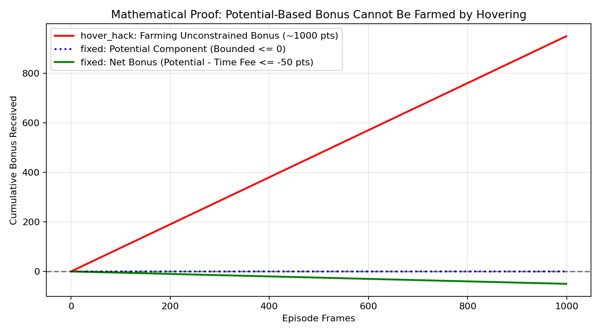

🚀 Lunar Lander: Reward Shaping & Live Simulation
1. Executive Summary & Headline Results
This project implements and evaluates reward shaping and reward hacking in Gymnasium's LunarLander-v3 physics environment using PPO.
A naive bonus for remaining upright and slow leads the policy to exploit the 1,000-frame episode timeout by hovering indefinitely instead of landing. We formalize and verify the potential-based shaping solution that cures this vulnerability.
Run full evaluation (python -m ll.evaluate) to populate the summary table.
2. How It Works: Observations, Actions & Built-in Reward
Gymnasium provides an 8-dimensional continuous observation vector and 4 discrete engine actions:
0: NOOP (coasting)1: Fire Left RCS (steers right)2: Fire Main Engine (thrust upward)3: Fire Right RCS (steers left)
Two-Frame Step Reward Verification
Verification showing that built-in reward matches delta position score minus engine fuel cost:
| frame | action | distance | speed | tilt | legs_down | position_score | delta_shaping | fuel_cost | actual_reward | expected_reward |
|---|---|---|---|---|---|---|---|---|---|---|
| 1 | main_engine | 1.4259 | 0.4069 | 0.0060 | 0 | -183.8767 | -2.1970 | 0.30 | -2.4970 | -2.4970 |
| 2 | noop | 1.4330 | 0.3846 | 0.0094 | 0 | -182.7034 | 1.1733 | 0.00 | 1.1733 | 1.1733 |
| 3 | right_engine | 1.4396 | 0.3687 | 0.0146 | 0 | -182.2839 | 0.4195 | 0.03 | 0.3895 | 0.3895 |
| 4 | left_engine | 1.4456 | 0.3434 | 0.0182 | 0 | -180.7128 | 1.5712 | 0.03 | 1.5412 | 1.5412 |
| 5 | left_engine | 1.4509 | 0.3160 | 0.0195 | 0 | -178.6484 | 2.0644 | 0.03 | 2.0344 | 2.0344 |
| 6 | right_engine | 1.4557 | 0.3017 | 0.0224 | 0 | -177.9797 | 0.6686 | 0.03 | 0.6386 | 0.6386 |
| 7 | right_engine | 1.4599 | 0.2915 | 0.0274 | 0 | -177.8824 | 0.0973 | 0.03 | 0.0673 | 0.0673 |
| 8 | left_engine | 1.4635 | 0.2695 | 0.0309 | 0 | -176.3895 | 1.4929 | 0.03 | 1.4629 | 1.4629 |

3. Reward Hacking: The Hover Exploit vs. The Mathematical Fix
Hover Hack Vulnerability
Giving +1.0 per frame for being upright and slow allows the rocket to accumulate up to 1,000 points by floating at high altitude while burning at most ~300 in fuel.
Potential-Based Fix
Using F(s,s') = γ Φ(s') - Φ(s) with terminal potential zero guarantees that the cumulative bonus telescopes to ≤ 0 over any trajectory, making hovering strictly suboptimal.

4. Interactive Live Viewer
A real-time desktop viewer built in Pygame-CE driven by the real Gymnasium Box2D physics and the policy's deterministic predictions:
python -m ll.live_viewer --config baseline --seed 05. Reproducibility & Commands
# Check setup and environments
python scripts/00_check_install.py
# Run random policy baseline
python scripts/01_random_agent.py
# Verify reward formula
python scripts/02_explain_reward.py
# Quick PPO training smoke test
python -m ll.train --config baseline --quick
# Interactive live viewer
python -m ll.live_viewer --config baseline --seed 0